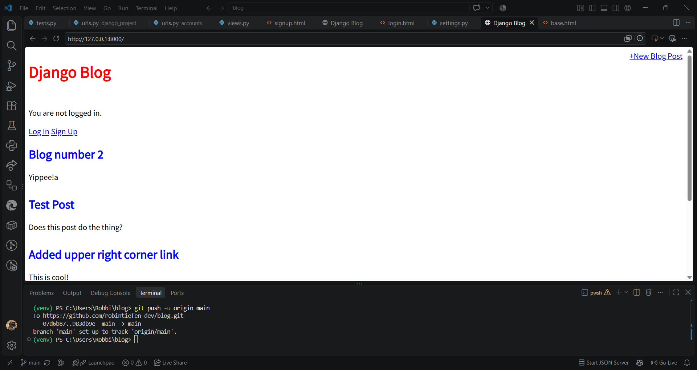

Projects
Here are some of the projects I have worked on during my time as a Computer Science student and through personal projects. These projects showcase my skills in web development, programming, and problem-solving.
Django Company Website
I created a company website using Django, a high-level Python web framework. The website includes features such as Django views, URL routing, and templates. This project allowed me to gain hands-on experience with Django and improve my web development skills.
View Project on GitHubCreative Coding Projects
I took course MART 120: Creative Coding, where I learned to create interactive and visually appealing projects using programming. This course allowed me to explore my creativity and apply programming concepts in a fun and engaging way. I created several projects during this course, including interactive visualizations and generative art pieces.
View Project on GitHubCard Caper Game
I developed Card Caper, an online multiplayer card game inspired by Cards Against Humanity, using AI-assisted coding tools. Through this project, I gained experience with web hosting, real-time multiplayer functionality, and deploying an interactive web application.
Play Card Caper HereBlog Posts
A blog application built with Python and Django.
Users can view blog posts, and the application supports creating, editing, deleting, and user authentication.
Technologies: Python, Django, HTML, CSS

View Project on GitHub